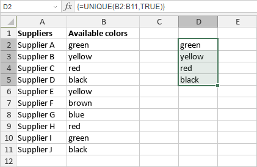

UNIQUE funkcija
Funkcija UNIQUE je jedna od funkcija za pretragu i reference. Koristi se za vraćanje liste jedinstvenih vrednosti iz navedenog opsega.
Sintaksa
UNIQUE(array, [by_col], [exactly_once])
Funkcija UNIQUE ima sledeće argumente:
| Argument | Opis |
|---|---|
| array | Opseg iz kog se izdvajaju jedinstvene vrednosti. |
| by_col | Opciona TRUE ili FALSE vrednost koja označava metod poređenja: TRUE za kolone i FALSE za redove. |
| exactly_once | Opciona TRUE ili FALSE vrednost koja označava metod vraćanja: TRUE za vrednosti koje se pojavljuju jednom i FALSE za sve jedinstvene vrednosti. |
Napomene
Imajte na umu da je ovo formula niza. Da biste saznali više, pročitajte članak Umetanje formula niza.
Kako primeniti funkciju UNIQUE.
Primeri
Slika ispod prikazuje rezultat koji vraća funkcija UNIQUE.
